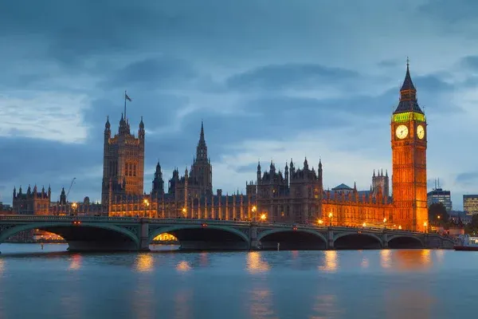
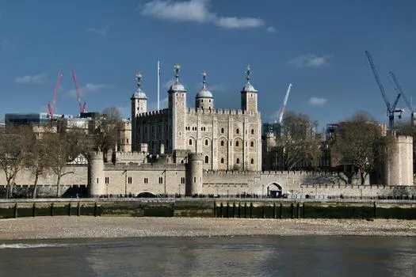
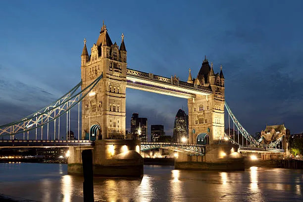
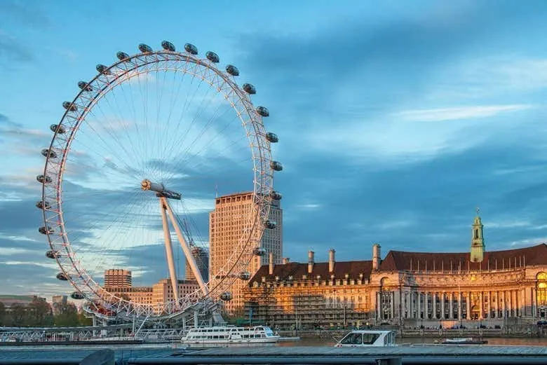
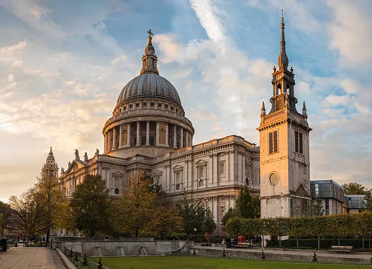
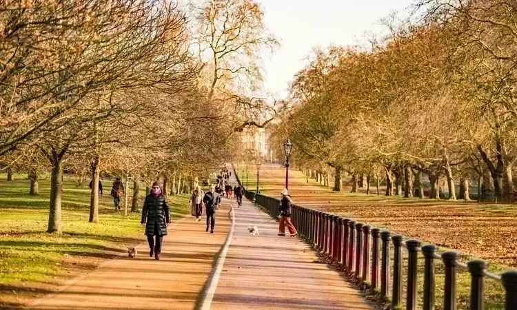

Buckingham Palace
Offizielle Residenz der britischen Königsfamilie. Berühmt für die Wachablösung.

Big Ben ist eines der bekanntesten Wahrzeichen Londons. Der Uhrturm heißt „Elizabeth Tower“, die Glocke ist Big Ben.

Historische Festung, königlicher Palast, Gefängnis und Schatzkammer - heute Heimat der Kronjuwelen.

Offizielle Residenz der britischen Königsfamilie. Berühmt für die Wachablösung.
Ikonische Klappbrücke über die Themse mit Glasboden-Aussichtsplattform.

Riesiges Riesenrad mit spektakulärer Aussicht über London.

Bedeutende Kirche mit riesiger Kuppel und der berühmten Whispering Gallery.

Einer der größten Parks Londons - perfekt zum Entspannen.
